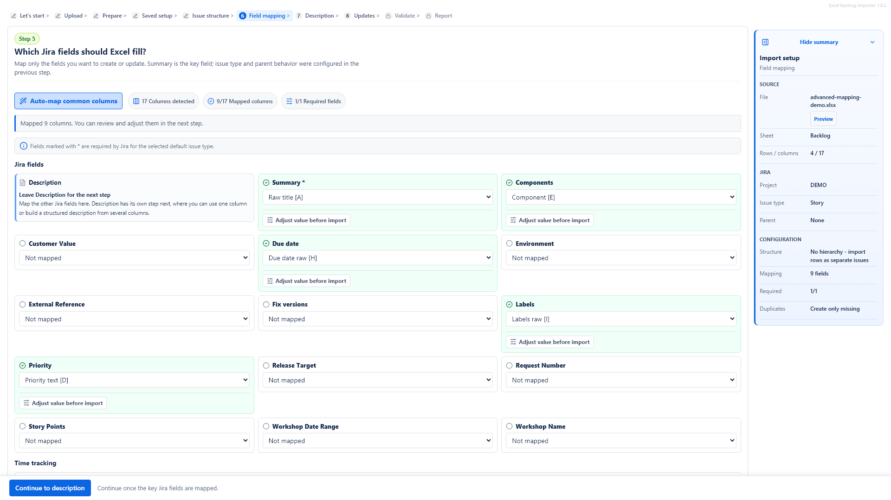

Can Jira import Excel files directly?
Jira's native import flow is CSV-based. Teams often export Excel data to CSV when they use Jira's native importer. A dedicated Excel importer can start from XLSX, XLS or CSV workbooks.
Teams often receive backlogs, issue lists, migration sheets, project plans or client handovers in Excel, then need to move that work into Jira Cloud safely. The challenge is not only creating Jira issues. It is preserving the right fields, descriptions, hierarchy and ownership while avoiding duplicates and accidental updates.
This guide explains the practical options: Jira's native CSV import, manual copy-paste for tiny batches, and a workbook-aware workflow with Excel to Jira Importer and Updater. It is written for project managers, product owners, delivery leads, Jira administrators and consultants who need a reliable path from Excel workbook to reviewed Jira issues.
Jira's native import flow is CSV-based. In many teams, an Excel file is first cleaned, flattened and exported to CSV before it is imported with Jira's native tools. That approach is perfectly reasonable when the file is already simple, the import is a one-time migration and a Jira administrator owns the preparation.
Real Excel workbooks are often less tidy. They may have multiple worksheets, notes above the table, header rows that start halfway down the sheet, acceptance criteria in separate columns, business context, estimates, parent references and update identifiers. Converting that kind of workbook to CSV too early can remove useful structure and move the cleanup burden outside the import workflow.
Native Jira CSV import is a good fit for clean, one-time imports where the data already matches the fields you plan to populate in Jira. It is especially useful for admin-led migrations, prepared CSV templates and simple field mapping where the source file can be controlled before import.
Use this route when the workbook is easy to flatten, the header row is clear, required fields are already present, users and dates are valid, and the target Jira project configuration is understood. A small test import is still a good idea before moving a large backlog.
Manual copy-paste is acceptable for a few Jira issues. If you have three tasks with simple summaries, creating them by hand may be faster than configuring any import process.
It becomes fragile when the workbook contains more rows, richer descriptions, estimates, owners, dates, components or hierarchy. Manual work is easy to interrupt, and spreadsheet context can get lost: acceptance criteria copied into the wrong field, parent relationships skipped, duplicate issues created from repeated rows, or inconsistent values typed across similar issues.
Excel to Jira Importer and Updater is an Atlassian Marketplace app for Jira Cloud. It lets you start from XLSX, XLS or CSV files, choose the worksheet and header row, map Excel columns to Jira fields, clean values, build Jira descriptions, validate rows and review planned changes before Jira is updated.
This workflow makes sense when the source is a real workbook rather than a perfect CSV template. It is also useful for repeat uploads where existing Jira issues need to be updated from Excel instead of recreated as duplicates.
Good imports start with a workbook that is easy to understand. You do not need to remove every useful business column, but each row should have a clear purpose and the required Jira values should be visible.
A simple workbook usually has one row per Jira issue and enough columns to populate the fields your team uses every day.
| Summary | Description | Issue Type | Priority | Assignee | Due date | Component |
|---|---|---|---|---|---|---|
| Add onboarding checklist | Create the first version of the customer onboarding checklist. | Task | Medium | alex@example.com | 2026-07-10 | Customer Portal |
| Validate billing address rules | Confirm required fields and error messages for EU customers. | Story | High | maria@example.com | 2026-07-17 | Billing |
Real Excel workbooks often contain cover sheets, notes, lookup tabs, archived versions or several worksheets for different teams. The row with column names is also not always the first row; it may appear after instructions, metadata or a client approval note.
A workbook-aware import flow lets you choose the worksheet that contains Jira-ready rows and select the header row before mapping begins. This prevents the importer from treating notes or title rows as Jira data.

Mapping connects each spreadsheet column to the Jira field it should populate. Common mappings include Summary, Issue Type, Description, Priority, Assignee, Reporter, Due date, Components and custom fields available in the selected Jira project and issue type configuration.
Mapping is also a safety boundary for updates. Instead of treating every spreadsheet cell as something that should overwrite Jira, you decide which workbook columns are relevant and which Jira fields are intentionally created or updated.

Jira Description often needs more than one spreadsheet column. Description Builder can combine acceptance criteria, notes, business context and source references into one structured Jira Description.
For example, a workbook might store Acceptance Criteria, Notes, Business Context and Source Reference separately. Keeping those columns separate is useful for review, but Jira users usually need a readable issue description. Description Builder bridges that gap without forcing spreadsheet authors to maintain one large formatted cell.

Hierarchy imports need careful preparation because parent-child relationships depend on the Jira issue type hierarchy, field screens, permissions and project configuration. Conceptually, the workbook needs a way to say which rows belong together and which rows should become parent or child issues.
Safe hierarchy examples include columns such as Epic Name, Story Summary, Sub-task Summary, Parent Key, Parent Row, Level or another stable parent reference. Those names are examples, not required column names. The important part is that the workbook structure can be mapped and validated before Jira issues are created.
| Epic | Story | Sub-task | Parent reference |
|---|---|---|---|
| Customer onboarding | Create onboarding checklist | Draft checklist copy | Story row 2 |
| Customer onboarding | Create onboarding checklist | Review with support team | Story row 2 |
| Billing improvements | Validate billing address rules | Confirm EU validation cases | Story row 5 |
For deeper detail, read the supporting guide to import epics, stories and subtasks from Excel.
Repeat uploads are different from one-time imports. Teams often need bulk priority updates, due date updates, ownership cleanup, description refinement, status or context cleanup, fixes after an initial import, or synchronization from a spreadsheet handover that remains active during review.
To update Jira issues from Excel, the import setup needs a stable way to match workbook rows to existing Jira issues, such as a Jira issue key or another supported row identity. Without that identity, repeated uploads can accidentally create duplicates instead of updating the intended issues.
| Issue key | Summary | Priority | Assignee | Due date | Comment/Notes |
|---|---|---|---|---|---|
| PROJ-124 | Add onboarding checklist | High | alex@example.com | 2026-07-08 | Moved earlier after customer review. |
| PROJ-130 | Validate billing address rules | Medium | maria@example.com | 2026-07-22 | Waiting for finance approval. |
For a focused workflow, read the guide to update Jira issues from Excel.
Review is the safety step. Before importing, check planned created issues, updated issues, skipped rows and validation errors. A good review catches missing summaries, invalid users, unsupported parent relationships, duplicated rows, date problems and values that need cleanup before Jira changes are made.

Native Jira CSV import can be the right choice when the file is already a clean CSV, a Jira administrator owns the process, the import is one-time, the mapping is simple and the source does not need workbook-specific handling. It is also a good option for controlled migrations where the team can fully prepare the source data before import.
If your workbook has already been flattened, required fields are complete, user values are valid, parent references are known and no repeat update workflow is needed, native CSV import may be the most direct path.
A dedicated Excel to Jira importer makes sense when teams receive real workbooks from clients, analysts or project teams and need a safer workflow than copy-paste or one-off CSV cleanup. It is especially helpful for non-technical users, multiple worksheets, non-first header rows, recurring uploads, hierarchy, Description Builder, value cleanup and review before Jira changes.
For a fair comparison, read Excel to Jira vs CSV import.
Review the product page, documentation and Marketplace listing when you are ready to evaluate the app with your own workbook structure.
This video walkthrough shows the core workflow: upload a workbook, select the worksheet and header row, map columns, review planned Jira changes, then confirm the import or update.
Watch Excel to Jira Importer - Import & Update Jira Issues from Excel on YouTube.
Jira's native import flow is CSV-based. Teams often export Excel data to CSV when they use Jira's native importer. A dedicated Excel importer can start from XLSX, XLS or CSV workbooks.
Prepare the workbook, choose the worksheet and header row, map Excel columns to Jira fields, validate the rows, review planned creates or updates, then confirm the import.
For native Jira import, CSV preparation is usually required. Excel to Jira Importer and Updater can work from real Excel workbooks, so CSV conversion is not required for that workflow.
Yes, when the update setup has a stable way to match workbook rows to Jira issues, such as an issue key or another supported row identity.
Yes, when the workbook structure and Jira project configuration support the planned hierarchy. Parent relationships should be validated before creating issues.
Yes. Workbook columns can be mapped to Jira fields, including custom fields that are available for the selected Jira project and issue type.
Yes. Description Builder can combine multiple workbook columns, such as acceptance criteria, notes and business context, into one structured Jira Description.
Yes. A review step should show planned creates, updates, skipped rows and errors before the final import or update is confirmed.
Native Jira CSV import can be enough for clean, one-time, admin-led imports where the data is already prepared in CSV and the mapping is simple.
Use a dedicated importer when the source is a real workbook with multiple sheets, non-first header rows, hierarchy, repeat updates, Description content or values that need review and cleanup.
Yes. Excel to Jira Importer and Updater is an Atlassian Marketplace app for Jira Cloud.
The app is built for Atlassian Forge and Jira Cloud. Review the product security and data processing pages for current implementation and data handling details.